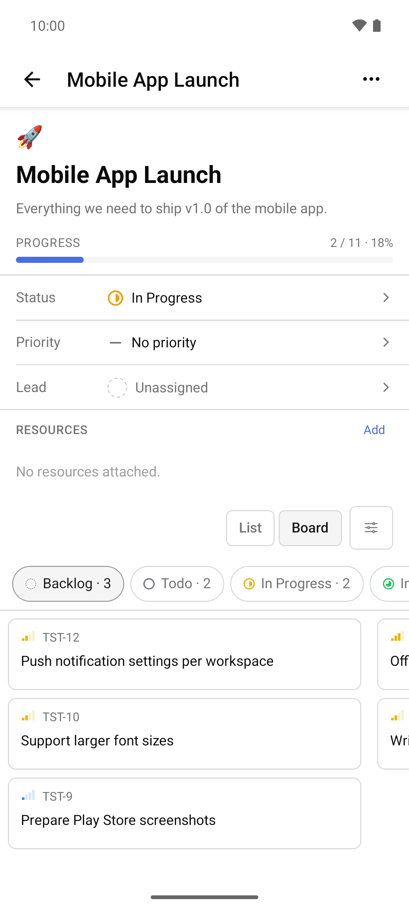
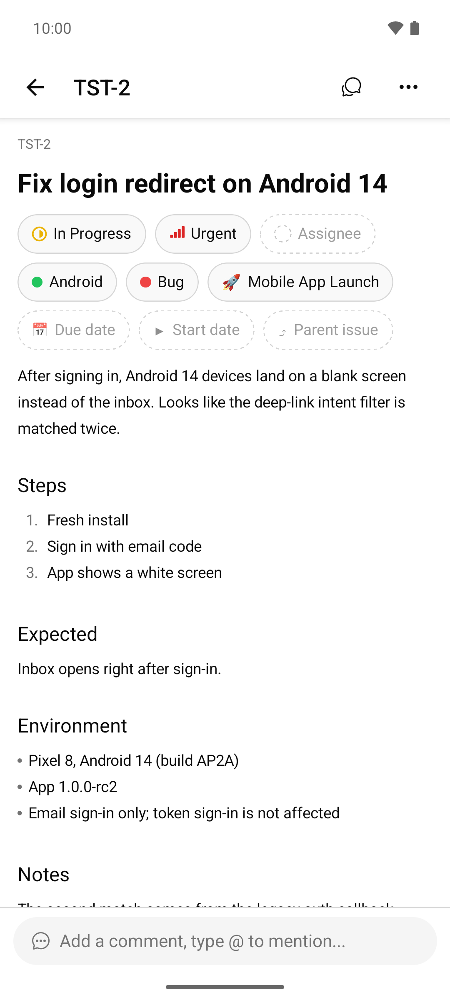
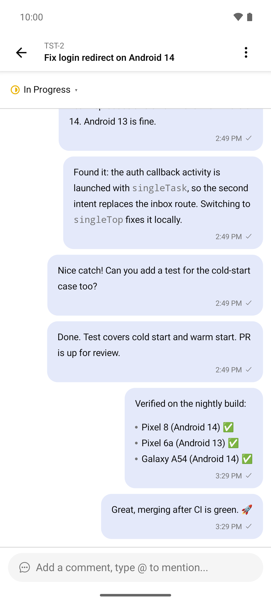
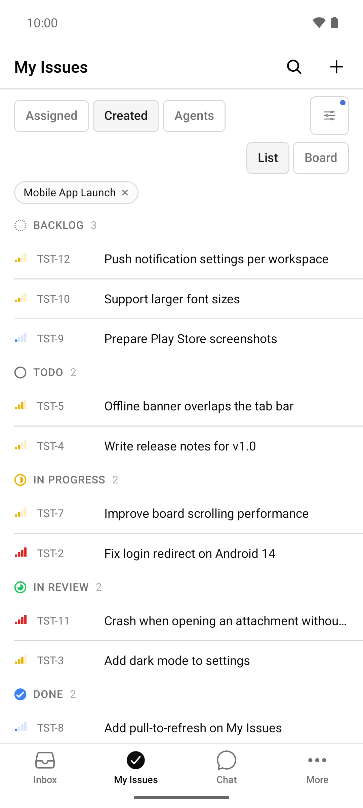
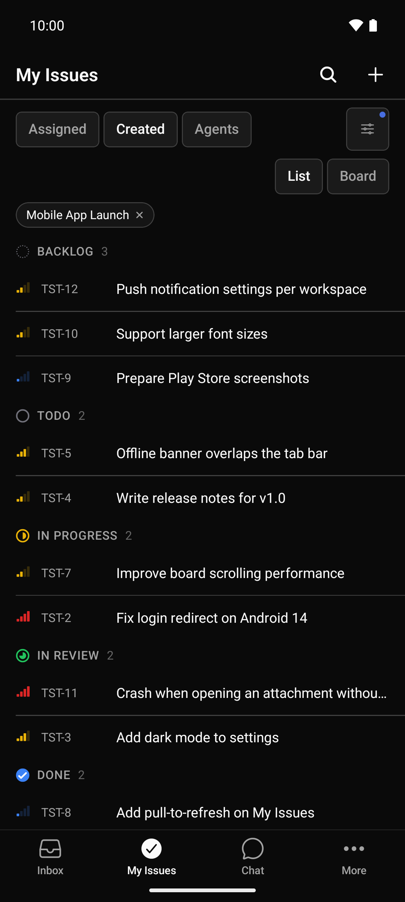

Multica for Android (unofficial)
An Android app for Multica, the platform where people and AI coding agents work on the same issues. Follow and steer your agents on the go – connected to your own Multica server, self-hosted or cloud.
v2.0.0: tablet layout (navigation rail from 600 dp, two-pane issue view, limited reading width), saved views, batch actions, wakeups, autopilots and runtimes. See the changelog and the known issues.
Screenshots

Board 
Issue detail 
Issue chat 
My Issues 
Dark mode
Features
- Inbox with live updates, unread and archive views, filters, row and bulk actions, and a “Done” action.
- Notifications without Firebase or Google Play Services: an optional foreground service keeps one WebSocket connection to your own server.
- Issues and Kanban board: My Issues with the tabs Assigned, Created and All, board with drag and drop in landscape and on tablets, assignee and creator filters, sorting, saved and pinned views, multi-select with batch actions.
- Issue detail: all common fields, sub-issues by stage, custom properties, conflict protection when editing.
- Comments and issue chat: threads, reactions, mentions, attachments, offline comments, and a chat-style timeline view.
- AI agents: run transcripts with secret redaction, cancel and re-run, chat sessions with a message queue to steer an agent.
- Wakeups: create, edit, reschedule, turn off and trigger wakeups on an issue; workspace overview with filters.
- AI Team: autopilots with “Run now” and runs, runtimes grouped by machine, “Why is my agent stuck?”, agent and squad views.
- Projects and workspaces: project management, workspace switcher and invitations.
- Android and tablets: portrait and landscape, navigation rail and two-pane issue view on tablets, TalkBack labels, 200 % font size, English, German and Simplified Chinese.
- Connection and security: server URL at runtime, Cloudflare Access service tokens, private CAs, secrets in the Android Keystore, no camera, microphone or storage permissions.
Use cases
- Steer AI coding agents from your phone – see when an agent has finished or needs input, read the transcript, answer and re-run.
- Notifications on devices without Google services – notifications come from your own server, not from a third-party push service.
- Self-hosted teams – the same APK works for every server: on a LAN, behind a VPN, behind Cloudflare Access or with a private CA.
Requirements
- Your own Multica instance (self-hosted or Multica Cloud) and an account on it. Developed and tested against a self-hosted Multica server v0.6.1.
- Android 7.0 (API 24) or newer on an ARM device (
arm64-v8aorarmeabi-v7a). There is no Play Store release; signed APKs with SHA-256 checksums are on the Releases page.
FAQ
- Is there a Multica Android app?
- The official Multica mobile client is built for iOS only. This project is an unofficial Android port of that client. It is not affiliated with or endorsed by Multica / Index Labs.
- How can I manage AI coding agents from my phone?
- Connect the app to your Multica server. Agent results and questions arrive in the inbox; you can read run transcripts, reply in the issue chat, re-run or cancel runs and chat with an agent directly.
- Does it work with self-hosted Multica?
- Yes – it was built and tested with a self-hosted Multica server. Enter your server URL on first start.
- Is this app open source?
- It is source-available: the complete source is published under the Multica License, the Apache License 2.0 together with additional conditions. Because of those conditions it is not an OSI-approved license. See the LICENSE.
- Is my data sent anywhere else?
- No. The app talks only to the Multica server you configure (plus Cloudflare, if you use the Cloudflare Access mode). No Firebase, no analytics, no tracking.
More questions, troubleshooting and a detailed feature list are in the README.